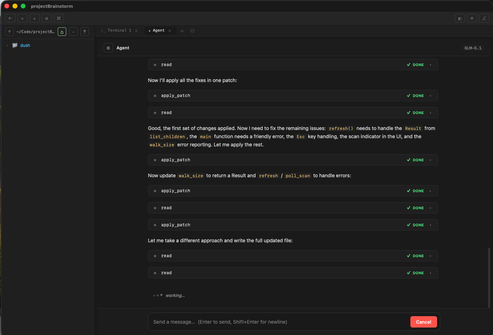

Features
Every feature is scoped to a project and designed to stay out of the way of a terminal-first workflow. Visual tools where they help, keyboard where they don't.
Projects
A project is just a root directory. When you open one, every terminal spawned in that window starts at the project root, the file browser is locked there, and the git panel operates on that repo. ⌘P fuzzy-search stays inside the project.
This means you can run a CLI agent like claude or
aider in a terminal tab and click around the file tree
without ever sending a stray cd to the shell — the file
browser is purely visual.
- One window = one project. Opening a project in the picker takes over the current window (VS Code convention). Already-open projects get focused if you try to open them again.
- Multi-window on demand. ⌘⇧N opens a fresh project picker so you can open a second project in parallel. Each window is fully independent.
- Picker with recents. Projects are stored at
~/.launchpad/projects.json. Right-click (or the ⋯ hover menu) to rename, open in a new window, or remove from the list. - Back to projects — a ← button in the toolbar tears down the workspace and returns to the picker.
Terminal
Full PTY-backed terminal with tabs, split panes, and a split workspace. Spawns real zsh/bash processes with proper signal handling, 256-color support, and correct escape sequences.
Tabs and panes
- Multiple tabs (⌘T / ⌘W / ⌘1-9)
- Split pane within a tab (⌘D) with draggable divider
- Split workspace into left/right groups (⌘\) — each group has its own tab bar
- Drag tabs between groups, or move with ⌘⇧M
- Switch focus between groups with ⌘⌥← / ⌘⌥→
- Clear screen (⌘K)
Under the hood
- WebGL-accelerated rendering with canvas fallback
- Unicode 11 width tables for correct CJK/emoji rendering
- Backpressure flow control prevents xterm.js write queue overflow
- Right-click context menu (Copy, Paste, Clear)
- Drag files from the sidebar to paste paths
- Configurable font, size, cursor style, scrollback
Code editor
Files open as tabs alongside your terminal tabs — one unified tab bar. Click a file in the sidebar or use ⌘P, and it opens in a full CodeMirror 6 editor.
- Syntax highlighting for JS, TS, JSX, TSX, Python, Rust, HTML, CSS, JSON, Markdown, SCSS, TOML, YAML, Shell
- Find and replace (⌘F / ⌘H)
- Bracket matching, close brackets, code folding
- Autocompletion, highlight selection matches
- Rectangular selection, crosshair cursor
- Line numbers, active line highlight, indent guides
- File path breadcrumb with
›separators + line/column status bar - Modified indicator in tab (yellow dot)
- Unsaved changes warning on close
- Right-click context menu (Cut, Copy, Paste, Select All)
- Save with ⌘S
Built-in agent (⌘I)
A chat coding agent built into Launchpad as its own tab type, alongside
terminal and editor tabs. Runs in-process — no sidecar binary, no stdio
framing — by depending on the
launchpad-agent
crates directly. CLI agents like claude and aider
still work in terminal tabs; this is a complementary surface, not a
replacement.

Providers and models
- 10 provider presets — Anthropic, OpenAI, Google, OpenRouter, Groq, Together, Mistral, Ollama, Z.ai (coding plan), and a Custom OpenAI-compatible endpoint.
- Save & reload — change provider or API key in settings, hit Save & reload, no app restart. Open chat tabs reconnect on next message.
- API keys at
~/.launchpad/agent-config.json— chmod 0o600, owner read/write only.
Conversation surface
- Markdown streaming with code-block highlighting; tool cards collapse and expand for every action the agent takes.
- Per-tool diff cards for
apply_patch— parses the unified diff and renders with the same renderer the git panel uses (file header, hunks, +/- counts, color coding).writeshows path + line/char count + capped content preview. - Cost / usage footer per turn — input/output tokens, cache hit/write, session totals.
- Approval cards for tools that need permission, with six scopes (Once / Turn / Session / Path Prefix / Host / Tool).
Composer
@file mentions — type@to fuzzy-search project files (same index ⌘P uses). Picked files become structured context the agent receives directly./slash commands — type/to pick a skill, aSKILL.mddocument under~/.lpagent/skills/<name>/or<project>/skills/<name>/. The skill's body gets injected into the next turn as system context.- Four starter skills bundled and seeded on first run:
/commit(generate a conventional commit message),/review(review the staged diff),/explain(walk through code),/plan(break a feature into phased steps).
Workspace integration
The agent can drive Launchpad's UI directly through five Launchpad-native tools — so when it edits a file, it can show you the change without you having to find it.
lp_open_in_editor— open a file in an editor tab (optionally at a line/column)lp_show_diff— open a diff tab between two git refslp_open_merge_tab— open the 3-pane merge tab for a conflicted filelp_refresh_git_panel— force the git panel to refresh (called aftergit commit)lp_reveal_in_finder— reveal a file in macOS Finder
Sessions
- Persistent — past conversations sit in a sidebar (☰ button), resumable from any window.
- Lazy — opening a chat tab doesn't spawn a session. The runtime sees nothing until you send the first message, so empty tabs don't clutter the list.
- Per-row delete — × on hover removes the rollout file from disk and hides the session from the list.
lpa-core, lpa-server, lpa-provider, lpa-tools, lpa-safety, lpa-mcp, lpa-protocol, lpa-utils) compiled into the Tauri binary. Streaming text deltas are mpsc sends, not stdout reads. See Architecture → Agent.
Git panel
Open with ⌘G. A visual git workflow designed so you never have to remember git commands. Stage, commit, push, pull, stash, merge, create branches, amend, cherry-pick, rebase — all from buttons.
Working with changes
- Quick actions toolbar — Pull, Push, Fetch, Stash, Pop in one click
- Staged vs unstaged split — clear separation of what's going into your commit
- Stage / unstage / discard — per-file buttons with confirmation on destructive actions
- Commit form — multi-line textarea with conventional commit prefix dropdown (feat / fix / chore / ...) and character counter
- Amend — Amend (with staged) reuses the index, Amend message only keeps the existing tree. Both prompt before rewriting a commit that's already on a remote.
- Diff preview — click any changed file to see a structured diff with line numbers and hunk headers
Branches and history
- Branch management — create, switch, delete, merge branches. View local and remote branches with last commit info.
- Commit history — last 30 commits with OID, message, author, and timestamp. Click to expand and see changed files with +/- line counts.
- Right-click any commit for: Compare with HEAD / parent / arbitrary ref, Cherry-pick onto HEAD, Rebase from here…, Copy OID.
- Compare two refs — opens a dedicated diff tab listing every changed file between the refs, with full hunks and +/- counts.
- Ahead/behind indicators — see how your branch compares to remote at a glance
- Auto-push with upstream — first push to a new branch automatically sets up tracking
Cherry-pick, interactive rebase, pending operations
- Cherry-pick onto HEAD — pick a single commit forward; conflicts route through the Pending Operation banner with Continue / Abort.
- Interactive rebase tab — right-click → Rebase from here… opens a dedicated composer. Drag commits to reorder, choose
pick / reword / squash / fixup / drop / editper row, then Apply. Conflicts pause the rebase, open the conflicted file inline, and surface Continue / Skip / Abort on the banner. - Backup tag — every interactive rebase creates
rebase-backup-<branch>-<timestamp>before any history rewrite, so you can recover from a bad rewrite. - Pending Operation banner — when a merge / cherry-pick / rebase is paused, the banner shows the operation kind, current step / total steps (rebase), and Continue / Skip / Abort buttons.
Conflict resolution
- Inline conflict editor — open a conflicted file and the editor renders an action bar above each
<<<<<<<block with Accept Ours / Theirs / Both. Save when all blocks are resolved → file auto-stages and the panel updates. - 3-pane merge tab — for tougher conflicts, click Open 3-Way to see ours / merged / theirs side by side. Side panes are read-only; the center pane is editable with synchronized line-aligned scrolling. Save → auto-stages.
- Per-file Ours / Theirs / Edit buttons in the conflicts section for whole-file resolutions.
GitHub and reliability
- GitHub integration — Open Repo, Open Branch, and Create PR buttons (auto-detected from your remote URL, works for SSH and HTTPS, including
git@github.com-alias:ssh-config aliases) - Stash management — save, pop, apply, and drop stashes
- Cancellable network ops — push, pull, fetch, merge can be cancelled mid-operation, even on a stalled TCP connection
- HTTPS-safe defaults — no interactive credential prompts (they'd hang forever in a GUI app with no TTY); SSH agent socket forwarded even when launched from Finder
- Git cheatsheet — hit ? for a plain-English explanation of git concepts
git2 crate for speed. Network operations shell out to your
system git so they respect your SSH keys, credential
helpers, and .gitconfig. No credential storage reinvention.
File browser
- Tree view with expandable directories, rooted at the project directory
- Color-coded by file type (JS yellow, Python green, Rust pink, config cyan) and git status (modified yellow, new green, deleted red, staged green, conflict pink)
- Agent-safe — navigating folders never writes to a terminal. Browse freely while a CLI agent runs, without risk of sending a surprise
cd. - Root-locked — nav-up ↑ caps at the project root, go-home ⌂ jumps back to the root from any depth
- CRUD operations — right-click to create new files/folders, rename, delete, reveal in Finder
- Live filesystem watcher — files created, modified, or deleted from the terminal or externally appear instantly in the tree (no manual refresh needed)
- Off-DOM tree building — folder expansion is flicker-free thanks to detached DOM fragment rendering
- Click to open in editor, double-click folder to navigate
- Drag files to terminal to paste the path
- Right-click: copy path, copy name, reveal in Finder
- Search / filter with ⌘F
- Toggle hidden files, resizable sidebar
Quick open (⌘P)
Fuzzy file search across your project. Case-insensitive, ranked by path
length. Skips hidden dirs, node_modules, target,
and other build noise. Arrow keys to navigate, Enter to open as an
editor tab.
Settings (⌘,)
All preferences in one place, applied live to open terminals and editors:
- General — sidebar width
- Terminal — font family (SF Mono, Menlo, Fira Code, JetBrains Mono...), font size, scrollback, cursor style, cursor blink
- Editor — font size, tab size, word wrap
- Git — auto-refresh interval, default commit prefix
- Agent — provider preset, API key, default model, base URL. Save & reload rebuilds the runtime in place — no app restart.
Settings saved to ~/.launchpad/config.json. Project list saved to ~/.launchpad/projects.json. Agent config saved to ~/.launchpad/agent-config.json (chmod 0o600).
Keep going: keyboard shortcuts · architecture.